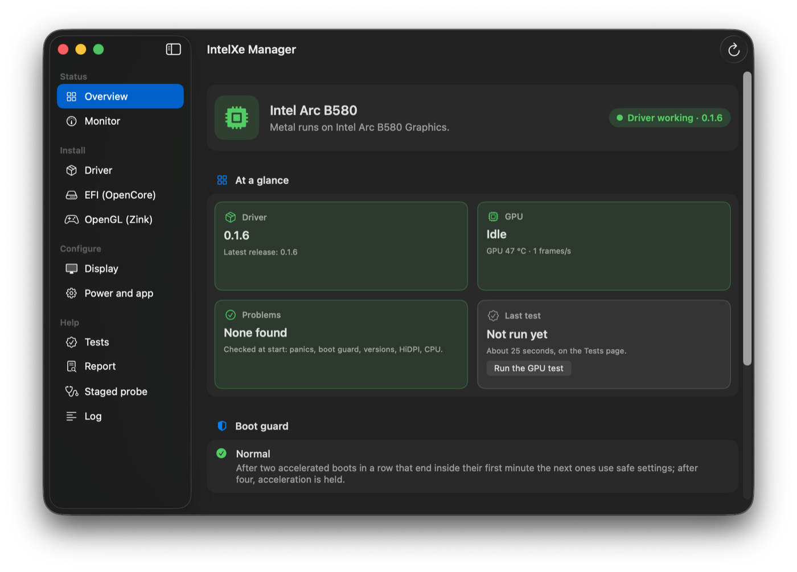

TroubleshootingSorun giderme
Boot and kernelAçılış ve çekirdek
Problems that show up while the PC starts: before the desktop, or a desktop without the driver. Each entry starts with what you see. The way back is always the same: your USB stick with a working EFI, or safe mode.Bilgisayar açılırken çıkan sorunlar: masaüstü gelmeden önce ya da masaüstü sürücüsüz açıldığında. Her madde gördüğünüz şeyle başlar. Geri dönüş yolu hep aynıdır: çalışan bir EFI'si olan USB belleğiniz ya da güvenli mod.
Not sure which entry? Find your problem by what you see.Hangi madde olduğundan emin değil misiniz? Gördüğünüze göre sorununuzu bulun.
The macOS installer shows no picturemacOS kurulum programı görüntü vermiyor
You seeGördüğünüzStage 1: the macOS installer gives no picture.1. aşama: macOS kurulum programı görüntü vermiyor.
Check firstÖnce bakın
IntelXe.kextorSSDT-ARCOFF.amlis already in the EFI.
IntelXe.kextya daSSDT-ARCOFF.amlzaten EFI'de.
The fixÇözüm
Take both out of the EFI (and their config.plist entries) for the install; they come last, after the driver is installed (stage 4).
Kurulum için ikisini de (config.plist'teki kayıtlarıyla birlikte) EFI'den çıkarın; bunlar sürücü kurulduktan sonra, en son eklenir (4. aşama).
Why?
The table hides the card from the generic display driver the installer runs on, and nothing takes its place until the driver is installed.
Neden?
Bu tablo kartı, kurulum programının kullandığı genel ekran sürücüsünden gizler; sürücü kurulana kadar da onun yerini alacak bir şey yoktur.
Panic about 20 seconds into the boot, watchdogd ... exitedAçılışın yaklaşık 20. saniyesinde panik, watchdogd ... exited
You seeGördüğünüzA panic about 20 seconds into the boot that names watchdogd.Açılışın yaklaşık 20. saniyesinde watchdogd'yi anan bir panik.
Check firstÖnce bakın
- The report in
/Library/Logs/DiagnosticReports/Kernel-*.panicnameswatchdogd. UEFI > Output > ReconnectGraphicsOnConnectistrue.
/Library/Logs/DiagnosticReports/Kernel-*.paniciçindeki rapordawatchdogdgeçiyor.UEFI > Output > ReconnectGraphicsOnConnecthâlâtrue.
The fixÇözüm
Set it to false (stage 2, item 5). The app's EFI page and the Windows tool set it.
Ayarı false yapın (2. aşama, 5. madde). Uygulamanın EFI sayfası ve Windows aracı bu ayarı kendiliğinden yapar.
With true, OpenCore's RELEASE build boots macOS without a console framebuffer; its DEBUG build is slow enough to hide this, so check the setting above all before you move OpenCore to a RELEASE build.
Ayar true iken OpenCore'un RELEASE derlemesi macOS'u konsol framebuffer'ı olmadan açar; DEBUG derlemesi yavaş olduğu için bu sorun onda görünmez. Bu yüzden OpenCore'u RELEASE derlemesine geçirmeden önce bu ayarı mutlaka denetleyin.
A black screen or a reboot loopSiyah ekran ya da sürekli yeniden başlama
You seeGördüğünüzThe boot ends in a black screen, or the PC restarts again and again.Açılış siyah ekranda bitiyor ya da bilgisayar tekrar tekrar yeniden başlıyor.
Check firstÖnce bakın
- A panic about 20 seconds into the boot that names
watchdogdhas a known cause: the console setting. - A held boot that stays at the Apple logo: the boot guard.
- Açılışın yaklaşık 20. saniyesinde
watchdogd'yi anan bir paniğin bilinen bir nedeni var: konsol ayarı. - Apple logosunda kalan, hızlandırması durdurulmuş bir açılış: açılış koruması.
The fixÇözüm
- Boot from your USB stick with the working EFI, or press Shift with the OpenCore entry selected to boot safe mode (it skips the Auxiliary Kernel Collection, which holds the kexts
install.shinstalled). - Then undo the driver and the EFI:
- Çalışan EFI'nin bulunduğu USB bellekten açın ya da OpenCore'un açılış menüsünde macOS seçiliyken Shift'e basarak güvenli modda açın (güvenli mod,
install.sh'in kurduğu kext'leri taşıyan Yardımcı Kernel Koleksiyonu'nu atlar). - Sonra sürücüyü ve EFI'yi geri alın:
- the driver: the app's Driver page;
- the EFI: remove
IntelXe.kextandSSDT-ARCOFF.amlfrom the EFI on the app's EFI page.
- sürücü: uygulamanın Sürücü sayfası;
- EFI:
IntelXe.kextileSSDT-ARCOFF.aml'i uygulamanın EFI sayfasında EFI'den çıkarın.
- the driver:
sudo ./install.sh --undoin the package folder; - the EFI:
sudo ./efi.sh --undo, or removeIntelXe.kextandSSDT-ARCOFF.amlby hand.
- sürücü: paket klasöründe
sudo ./install.sh --undo; - EFI:
sudo ./efi.sh --undoya daIntelXe.kextileSSDT-ARCOFF.aml'i elle çıkarın.
Then send a report: a boot that does not come up is a bug we want to see. Everything else to undo: Undo everything.
Sonra bir rapor gönderin: açılmayan bir bilgisayar, mutlaka haberdar olmak istediğimiz bir hatadır. Geri alınacak diğer her şey: Her şeyi geri almak.
Crashes in the first minute, or a held boot (the boot guard)İlk dakikada çökmeler ya da hızlandırması durdurulmuş açılış (açılış koruması)
You seeGördüğünüzBoots that end inside their first minute; after a few in a row the desktop comes up without acceleration, or stays at the Apple logo.İlk dakikası dolmadan biten açılışlar; birkaçı üst üste gelince masaüstü hızlandırmasız açılıyor ya da Apple logosunda kalıyor.
- One bootTek açılışOne boot that ends inside its first accelerated minute (a panic, or the power button held) only makes the next one try again.Hızlandırmalı ilk dakikası dolmadan biten tek bir açılış (panik ya da güç düğmesine basılı tutarak kapatma) yalnızca bir sonraki açılışın yeniden denemesine yol açar.
- Two in a rowÜst üste ikiThe next boots arm with the safest settings: no async swaps, no flips.Sonraki açılışlar hızlandırmayı en güvenli ayarlarla açar: async swap ve flip kapalı.
- Four in a rowÜst üste dörtAcceleration is held.Hızlandırma durdurulur.
- A boot that runs for a minuteBir dakika sorunsuz çalışan bir açılışThe guard returns to normal.Koruma normale döner.
Check firstÖnce bakın
sysctl debug.intelxe.bootguardshows the guard's reading of the boot (state=held,display=firmware).- After two in a row,
ioreg -rc IntelXeFramebuffer -d1 | grep AccelSafesaysYes(the safest settings). - IntelXe Manager's Overview page shows the guard in its Boot guard card.
sysctl debug.intelxe.bootguardkorumanın bu açılışı nasıl değerlendirdiğini gösterir (state=held,display=firmware).- Üst üste iki başarısız açılıştan sonra
ioreg -rc IntelXeFramebuffer -d1 | grep AccelSafeYesyazar (en güvenli ayarlar). - IntelXe Manager'ın Genel bakış sayfası korumayı Açılış koruması kartında gösterir.
From 0.1.5 a held boot shows the desktop on the firmware framebuffer: Apple's own framebuffer driver on the picture the firmware lit, as the macOS installer runs on this card. No acceleration and no Metal, one resolution, and do not put the Mac to sleep in it. A held boot also shows the firmware framebuffer with the boot-arg -intelxe_noaccel and in safe mode.
0.1.5'ten itibaren hızlandırması durdurulmuş bir açılış, masaüstünü firmware'in framebuffer'ında gösterir: firmware'in açtığı görüntü üzerinde Apple'ın kendi framebuffer sürücüsü çalışır; macOS kurulum programı da bu kartta böyle çalışır. Hızlandırma ve Metal yoktur, tek bir çözünürlük vardır; bu açılışta Mac'i uyku moduna almayın. -intelxe_noaccel boot-arg'ıyla ya da güvenli modda yapılan bir açılış da firmware'in framebuffer'ını kullanır.
The fixÇözüm
- Log in and find out why: a panic report in
/Library/Logs/DiagnosticReports, the IntelXe Manager's Report page. - Repair or uninstall.
- Clear the guard and restart:
- Oturum açın ve nedenini bulun:
/Library/Logs/DiagnosticReportsiçindeki panik raporuna ya da IntelXe Manager'ın Rapor sayfasına bakın. - Sürücüyü onarın ya da kaldırın.
- Korumayı sıfırlayıp yeniden başlatın:
IntelXe Manager's Overview page, Boot guard > Clear the boot guard.
IntelXe Manager'ın Genel bakış sayfasında Açılış koruması > Açılış korumasını sıfırla.


In Terminal (or over SSH):
sudo nvram intelxe-accel-off=ok intelxe-guard=okTerminal'de (ya da SSH ile):
sudo nvram intelxe-accel-off=ok intelxe-guard=okWhy both variables?
Both variables, because on a held boot the count is cleared only in memory until a clean restart; sudo nvram -d intelxe-accel-off reports no error on macOS 26 but leaves the variable in place, =ok works on every version. The guard comes from the LaunchDaemon install.sh installs, which clears it once a boot has run for a minute.
Neden iki değişken birden?
İkisi birden gerekiyor, çünkü hızlandırması durdurulmuş bir açılışta sayaç, temiz bir yeniden başlatmaya kadar yalnızca bellekte sıfırlanır. sudo nvram -d intelxe-accel-off macOS 26'da hata vermez ama değişkeni de silmez; =ok her sürümde çalışır. Koruma, install.sh'in kurduğu LaunchDaemon'la çalışır; bu LaunchDaemon, bir açılış bir dakika çalıştığında korumayı temizler.
Older releases: 0.1.0 to 0.1.4
The kernel log of 0.1.0 and 0.1.1 still named nvram -d. To get the behaviour of 0.1.4 back (IntelXeFB without acceleration, which on macOS 26 stays at the Apple logo), set sudo nvram intelxe-held-display=fb; =ok undoes it.
Eski sürümler: 0.1.0-0.1.4
0.1.0 ve 0.1.1'in çekirdek günlüğündeki mesaj hâlâ nvram -d diyordu. 0.1.4'teki davranışa (hızlandırmasız IntelXeFB; macOS 26'da Apple logosunda kalır) dönmek için: sudo nvram intelxe-held-display=fb; =ok bunu geri alır.
If a held boot still stays at the Apple logoHızlandırması durdurulmuş açılış yine de Apple logosunda kalırsa
The IntelXe.kext in the EFI is older than 0.1.5, or the hand-off failed (handoff= in the sysctl above, read over SSH). Either:
- restart, and in the OpenCore picker choose Reset NVRAM (press Space if it is hidden). That clears the guard; OpenCore writes its own boot-args and SIP setting again at every boot (tested on the B580);
- or clear it over SSH (Remote Login turned on beforehand) with the command above and restart.
Ya EFI'deki IntelXe.kext 0.1.5'ten eski ya da ekranın devri başarısız olmuş (yukarıdaki sysctl'deki handoff=; SSH ile okunur). İkisinden birini yapın:
- yeniden başlatın ve OpenCore'un açılış menüsünde Reset NVRAM'i seçin (gizliyse Boşluk tuşuyla görünür). Bu, korumayı temizler; OpenCore kendi boot-args ve SIP ayarını her açılışta yeniden yazar (B580'de denendi);
- ya da SSH ile bağlanıp (Uzaktan Giriş'in önceden açılmış olması gerekir) korumayı yukarıdaki komutla temizleyin ve yeniden başlatın.
The firmware framebuffer of a held boot has not yet run on the B580.
Hızlandırması durdurulmuş açılıştaki firmware framebuffer'ı henüz B580'de çalıştırılmadı.
Crashes that keep coming back: send a report (it holds the panic's text).
Çökmeler sürüyorsa bir rapor gönderin (paniğin metni raporda yer alır).
macOS does not start and you cannot tell why: boot loggingmacOS açılmıyor ve nedenini anlayamıyorsunuz: açılış günlüğü
You seeGördüğünüzmacOS does not start, and nothing on the screen says why.macOS açılmıyor ve ekranda nedenine dair hiçbir ipucu yok.
Boot logging makes OpenCore write its log, boot.efi's lines and the panics it saves at the next boot into the root of the EFI, for a report.
Açılış günlüğü açıkken OpenCore bir sonraki açılışta kendi günlüğünü, boot.efi'nin satırlarını ve kaydettiği panikleri, rapora eklenmek üzere EFI'nin köküne yazar.
- Turn boot logging onAçılış günlüğünü açınFrom the boot that works, or from Windows.Çalışan bir açılıştan ya da Windows'tan.
- Boot the failing waySorunlu açılışı tekrarlayınOnce more.Bir kez daha.
- Collect the logsGünlükleri toplayınWith the report.Raporla birlikte.
- Turn it off againSonra kapatınIt slows every boot.Her açılışı yavaşlatıyor.
The fixÇözüm
Turn it on from the boot that works (your USB stick) or from Windows:
Çalışan bir açılıştan (USB belleğiniz) ya da Windows'tan etkinleştirin:
The apps' EFI pages: Boot logging (for troubleshooting) in IntelXe Manager on macOS and in IntelXe Manager for Windows.
İki uygulamanın da EFI sayfasında (macOS'ta IntelXe Manager, Windows'ta Windows için IntelXe Manager): Açılış günlüğü (sorun giderme için).
On macOS, in the package folder, the plan, then the change:
./efi.sh --bootlog-plan
sudo ./efi.sh --bootlog-applymacOS'ta, paket klasöründe önce plan, sonra değişiklik:
./efi.sh --bootlog-plan
sudo ./efi.sh --bootlog-applyOn Windows, with the script: IntelXe-EFI.ps1 -Plan bootlog then -Apply bootlog -Expect HASH (the hash the plan printed).
Windows'ta betikle: önce IntelXe-EFI.ps1 -Plan bootlog, sonra -Apply bootlog -Expect HASH (HASH: planın yazdığı özet).
Boot the failing way once more, then collect the logs with the report (Send a report).
Sorunlu açılışı bir kez daha deneyin, sonra günlükleri raporla birlikte toplayın (Rapor gönderin).
Every boot is slower while it is on: turn it off afterwards (the same section of the app, --bootlog-off-apply, -Apply bootlog-off).
Açık kaldığı sürece her açılış yavaşlar: işiniz bitince kapatın (uygulamanın aynı bölümü, --bootlog-off-apply, -Apply bootlog-off).
The desktop is not acceleratedMasaüstünde hızlandırma yok
You seeGördüğünüzNo transparency, slow windows, About This Mac does not name the card.Saydamlık yok, pencereler yavaş, Bu Mac Hakkında kartın adını göstermiyor.
Check firstÖnce bakın
- The app's EFI page:
IntelXe.kextmust be present and enabled, and SSDT-ARCOFF must name your card's ACPI path (the page adapts it; by hand: SSDT-ARCOFF). - In Terminal:
kmutil showloaded | grep -i intelxe sysctl debug.nmxaccelfbExpected output
The first should list
IntelXeandIntelXeFB; the second should print1. - If the guard holds acceleration, see the boot guard.
- Uygulamanın EFI sayfasında
IntelXe.kextyerinde ve etkin olmalı, SSDT-ARCOFF da kartınızın ACPI yolunu göstermeli (sayfa bunu kendisi uyarlar; elle: SSDT-ARCOFF). - Terminal'de:
kmutil showloaded | grep -i intelxe sysctl debug.nmxaccelfbBeklenen çıktı
İlki
IntelXeveIntelXeFB'yi listelemeli, ikincisi1yazmalı. - Hızlandırmayı açılış koruması kapalı tutuyorsa açılış koruması bölümüne bakın.
"macOS restarted after a kernel panic""macOS bir çekirdek paniğinden sonra yeniden başladı"
You seeGördüğünüzmacOS says it restarted after a kernel panic; IntelXe Manager checks for a recent panic report at every start and says so too.macOS bir çekirdek paniğinden sonra yeniden başladığını bildiriyor; IntelXe Manager da her başlatıldığında yeni bir panik raporu olup olmadığına bakar ve varsa bunu bildirir.
Check firstÖnce bakın
- The reports are in
/Library/Logs/DiagnosticReports/Kernel-*.panic. - A panic about 20 seconds into the boot that names
watchdogdhas a known cause: above.
- Panik raporları
/Library/Logs/DiagnosticReports/Kernel-*.paniciçinde. - Açılışın yaklaşık 20. saniyesinde
watchdogd'yi anan bir paniğin bilinen bir nedeni var: yukarıda.
The fixÇözüm
- Make a diagnostics report: it holds the panic's text (the last 7 days by default).
- Then open an issue with the report ID: Send a report.
- Bir tanılama raporu oluşturun: paniğin metni raporda yer alır (varsayılan olarak son 7 gün).
- Sonra rapor kimliğiyle bir issue açın: Rapor gönderin.